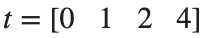

MATLAB 배열 연산·함수·그래프
학습 목표
좌표 변화에서 이동 거리와 속도를 계산하고, 함수와 그래프로 결과를 확인합니다.
실행 조건
MATLAB 또는 MATLAB Online을 사용합니다. 기본 활동은 MATLAB만으로 실행하며 드론 연결은 필요하지 않습니다.
원소별 계산과 행렬곱 구분하기
시작 조건
, 를 열벡터로 만듭니다.
진행 방법
- sqrt와 .^로 구간 길이를 계산하고 hypot 결과와 대조하세요.
- dx.*dy와 dx*dy'의 크기·의미를 비교하세요.
남길 결과
- 두 거리 계산의 차이와 곱셈 방식 비교.
dx=[.3;.4;0];dy=[.4;0;.2];
segment_m=sqrt(dx.^2+dy.^2);
disp(segment_m);disp(hypot(dx,dy));
% TODO: 원소별 곱과 행렬곱의 크기를 비교하세요.
결과 기록·자가 점검
연산 | |
결과 크기 | |
단위·의미 |
확인할 점
- 제곱과 행렬곱의 연산자를 섞지 않았는가?
- 길이와 길이 제곱의 단위를 구분했는가?
Timestamp 간격에 따른 Vertical Velocity 계산
시작 조건

s, 높이=[0,.4,.9,.7] m입니다.진행 방법
- diff(height)와 diff(t)를 구하고 원소별로 나누어 세 구간의 평균 Vertical Velocity를 계산하세요.
- Height는 측정 시각에, Vertical Velocity는 각 구간의 중간 시각에 그리세요. 각 그래프의 축 이름과 단위를 표시하세요.
- 마지막 구간 2–4 s에서 실제 시간 차를 쓴 값과 1 s라고 가정한 값을 각각 계산하세요. Height 변화량·사용한 시간 차·계산한 Vertical Velocity를 두 행으로 적어 차이를 설명하세요.
남길 결과
- Height·Vertical Velocity 그림과 마지막 구간의 비교.
t=[0;1;2;4];height_m=[0;.4;.9;.7];
velocity_mps=diff(height_m)./diff(t);
midpoint_s=(t(1:end-1)+t(2:end))/2;
plot(midpoint_s,velocity_mps,'o-');xlabel('Time [s]');ylabel('Velocity [m/s]');grid on;
% TODO: 높이 그림과 잘못된 시간 간격의 결과를 비교하세요.
결과 기록·자가 점검
구간 [s] | |
높이 변화 [m] | |
속도 [m/s] |
확인할 점
- diff 결과가 원래 배열보다 한 개 짧다는 점을 반영했는가?
- 불규칙한 측정 간격을 그대로 사용했는가?
계산 규칙을 함수로 재사용하기
시작 조건
segmentLength=@(dx,dy) hypot(dx,dy)를 새 좌표 변화에도 적용합니다.
진행 방법
- 길이가 같은 두 벡터를 함수에 전달하세요.
- 한 입력은 행벡터, 다른 입력은 열벡터인 경우 크기가 어떻게 되는지 확인하세요.
- 같은 shape의 입력만 받도록 검사하거나 입력 shape를 통일하세요.
남길 결과
- 작은 재사용 함수와 잘못된 입력 예 1개.
segmentLength=@(dx,dy) hypot(dx,dy);
disp(segmentLength([.1;.2],[.2;.1]));
% TODO: 입력 크기 검사와 행·열 입력의 처리를 추가하세요.
결과 기록·자가 점검
입력 크기 | |
출력 크기 | |
처리 규칙 |
확인할 점
- 자동 확장으로 예상보다 큰 행렬이 생기지 않았는가?
- shape를 고치면서 원소의 대응을 바꾸지 않았는가?